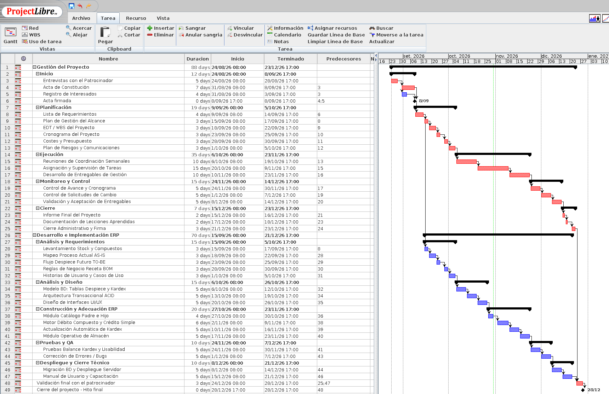

Stock descuadrado
Al vender un combo, las cantidades de sus componentes no se actualizaban bien y el inventario registrado dejaba de coincidir con el físico.
Proyecto final · Gestión de Proyectos · PMBOK 8
Mejora de la gestión de productos compuestos para optimizar el control de inventarios y ventas de Casa Novedades Decor: cada venta de un combo actualiza el stock de todos sus componentes y queda registrada en el Kardex.
El problema
Casa Novedades Decor vende artículos sueltos y también combos armados con varios de ellos. El ERP no tenía un mecanismo para relacionar un combo con sus componentes.
Al vender un combo, las cantidades de sus componentes no se actualizaban bien y el inventario registrado dejaba de coincidir con el físico.
No había un procedimiento estándar para registrar, modificar, desarmar ni consultar la composición de los combos ni sus movimientos.
Sin conocer la disponibilidad real de cada componente, se podía ofrecer un combo que en realidad no se podía armar.
Venta de 2 «Kit Mesa Navideña»
Venta de 2 «Kit Mesa Navideña»
La solución
Objetivo general: optimizar la gestión de productos compuestos para mejorar el control y la trazabilidad del inventario, así como la eficiencia del proceso de ventas.
| RF-001 | Registrar producto compuesto |
|---|---|
| RF-002 | Asociar productos individuales y cantidades |
| RF-003 | Consultar la composición de cada combo |
| RF-004 | Editar la composición |
| RF-005 | Eliminar o desactivar un combo |
| RF-006 | Generar reporte de productos compuestos |
| RF-007 | Registrar la venta de un combo completo |
| RF-008 | Validar la disponibilidad de los componentes |
| RF-009 | Actualizar automáticamente el inventario |
| RNF-001 | Usabilidad: interfaz fácil e intuitiva |
|---|---|
| RNF-002 | Seguridad: autenticación de acceso |
| RNF-003 | Control de acceso: permisos según rol |
| RNF-004 | Integridad: inventario actualizado correctamente |
| RNF-005 | Trazabilidad: registro de operaciones |
| RNF-006 | Compatibilidad con el ERP existente |
Cada requisito se construye en un paquete de la EDT y se valida con las pruebas de balance del Kardex (matriz de trazabilidad, Anexo 2 del informe).
Demo interactiva
Simulación del módulo propuesto. Los datos son de ejemplo y se guardan solo en tu navegador.
| Componente | Necesita | Stock | Queda |
|---|
| Código | Componente | Stock | Precio | Usado en |
|---|
| Combo | Estado | Componentes | Se pueden armar | Componente que limita |
|---|
| Fecha y hora | Usuario | Operación | Componente | Entrada | Salida | Saldo |
|---|
Gestión del proyecto
El problema operativo se convirtió en un proyecto con alcance, EDT, cronograma, presupuesto, riesgos e interesados definidos y verificables.
Dos componentes principales: Gestión del Proyecto (inicio, planificación, ejecución, monitoreo y control, cierre) y Desarrollo e Implementación ERP (análisis y requerimientos, diseño, construcción, pruebas y despliegue). 46 elementos elaborados en WBS Schedule Pro.

Desliza para recorrerla o haz clic para abrirla completa.
49 tareas del 24/08/2026 al 28/12/2026, con dependencias fin-comienzo y dos hitos: acta firmada (08/09) y cierre del proyecto (28/12).

| Partida | Monto |
|---|---|
| Gestión del proyecto | S/ 150.00 |
| Análisis de requisitos y diseño técnico | S/ 200.00 |
| Adecuación y desarrollo del ERP | S/ 500.00 |
| Pruebas, despliegue y capacitación | S/ 150.00 |
| Infraestructura y licencias | S/ 100.00 |
| Línea base de costos | S/ 1,100.00 |
| Reserva para riesgos y cambios | S/ 110.00 |
| Presupuesto total | S/ 1,210.00 |
Control con valor ganado: SPI = EV/PV y CPI = EV/AC, con meta ≥ 0.95. Una variación mayor al 10 % se informa al patrocinador; si supera el 15 %, se presenta una solicitud de cambio.
| Qué | A quién | Cuándo |
|---|---|---|
| Reunión de coordinación | Equipo | Semanal |
| Informe de avance (SPI, CPI, riesgos) | Patrocinador | Quincenal |
| Validación de entregables | Patrocinador y usuarios clave | Al cerrar cada fase |
| Coordinación diaria | Equipo | Diaria |
| Capacitación y manual | Almacén y ventas | Al desplegar |
| Métrica | Meta |
|---|---|
| Exactitud del descuento de componentes | 100 % de casos |
| Inventario físico vs. sistema | ≥ 98 % |
| Requerimientos con prueba aprobada | 100 % |
| Errores críticos al desplegar | 0 |
| Tiempo para registrar una venta de combo | ≤ 1 minuto |
| Operaciones con usuario y fecha | 100 % |
Al corte del 29/10/2026: inicio, planificación, análisis y diseño concluidos; valor planificado acumulado de S/ 358.52 (33 % del BAC).
Quiénes somos
Estudiantes del IX ciclo de Ingeniería de Sistemas de la Universidad Privada San Juan Bautista.
Director del proyecto
Planificación, seguimiento, riesgos, comunicaciones y cierre.
Administrador del ERP
Acceso, integración, seguridad y despliegue del ERP.
Analista de requerimientos
Levantamiento AS-IS, flujo TO-BE, reglas BOM e historias de usuario.
Desarrollador
Modelo de despiece y Kardex, módulos de catálogo y almacén.
Calidad y documentación
Casos de prueba, registro de errores, manual y capacitación.
Docente: Heberht Alvan Chavez Saravia · Curso: Gestión de Proyectos · Semestre 2026-II
Entregables